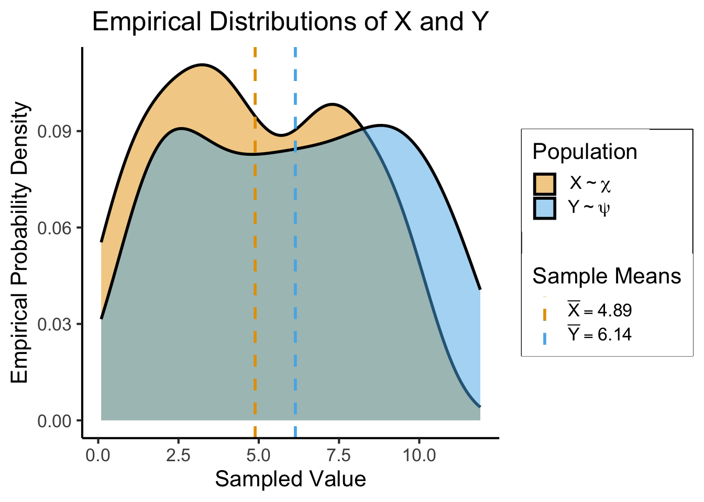
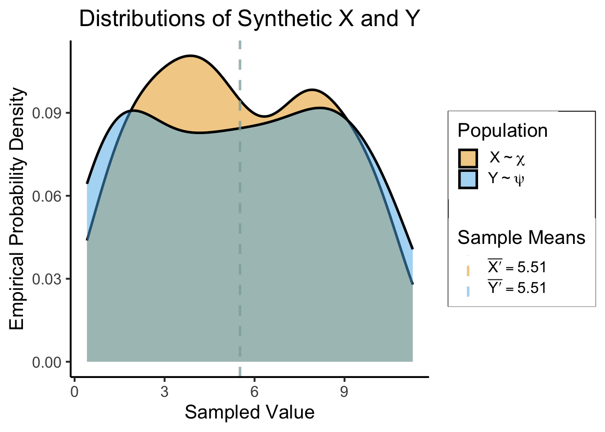
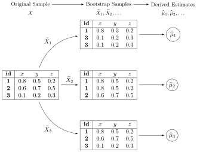
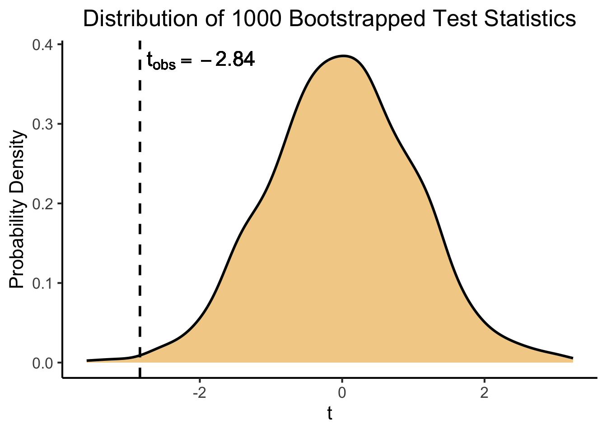

Code
source("../../_globals.r")source("../../_globals.r")I know that it’s coming too late to help you with your final project presentations, but I wanted to provide you all with a quick guide to carrying out hypothesis testing using the bootstrap method, where I try my best to omit the technical details so that you can use it as a practical guide in your future data science careers!
In this guide I draw on Efron and Tibshirani (1994) (PDF here). This choice may seem weird at first, because the authors of this book went on to author two of the most-used statistical learning textbooks ever, Hastie, Tibshirani, and Friedman (2013) and James et al. (2013), books which we drew on extensively in DSAN 5100!
However, since these books tend to adopt a full-on Bayesian approach, they essentially drop the notion of classical hypothesis testing (though Chapter 13 of James et al. (2013) discusses the specific complexities which arise when testing multiple hypotheses using a single dataset). So, instead we’ll be using the older book, since it has a chapter (Chapter 16) which explicitly ties the bootstrap method to classical hypothesis testing!
Simplifying the notation from Efron and Tibshirani (1994, 224), we can use bootstrap sampling to derive a classical \(p\)-value for the difference between two means as follows. Assume we have a sample \(\mathbf{X} = (x_1, x_2, \ldots, x_n)\) drawn from a population \(\chi\) and a sample \(\mathbf{Y} = (y_1, y_2, \ldots, y_m)\) drawn from a population \(\psi\)1
In code, to see what’s going on as we work through these steps, we load a dataset containing two samples \(\mathbf{X}\) and \(\mathbf{Y}\), where we’re unsure whether the populations \(\chi\) and \(\psi\) that they were drawn from actually have equal means:
library(tidyverse)
library(latex2exp)
# Populations
N <- 100
M <- 100
# Labels
chi_label <- TeX('$X \\sim \\chi$')
psi_label <- TeX('$Y \\sim \\psi$')
x_df <- tibble(val = runif(N, 0, 10), Population = "chi")
x_mean <- mean(x_df$val)
x_mean_str <- sprintf("%.2f", x_mean)
xbar_label <- TeX(paste0('$\\bar{X} = ',x_mean_str,'$'))
y_df <- tibble(val = runif(M, 1, 12), Population = "psi")
y_mean <- mean(y_df$val)
y_mean_str <- sprintf("%.2f", y_mean)
ybar_label <- TeX(paste0('$\\bar{Y} = ',y_mean_str,'$'))
data_df <- bind_rows(x_df, y_df)
mean_df <- tribble(
~var, ~var_mean,
"x", x_mean,
"y", y_mean
)
ggplot(data_df, aes(x=val, fill=Population)) +
geom_density(alpha = 0.5, linewidth = g_linewidth) +
geom_vline(
data=mean_df,
aes(xintercept=var_mean, color=var),
linewidth = g_linewidth,
linetype = "dashed"
) +
dsan_theme() +
scale_fill_manual(
values = c(cbPalette[1], cbPalette[2]),
labels = c(chi_label, psi_label)
) +
scale_color_manual(
"Sample Means",
values = c(cbPalette[1], cbPalette[2]),
labels = c(xbar_label, ybar_label)
) +
labs(
title = "Empirical Distributions of X and Y",
x = "Sampled Value",
y = "Empirical Probability Density"
)
Be sure to keep in mind the whole point of this hypothesis testing procedure: even though we have a specific sample \(\mathbf{X}\) from \(\chi\) and a specific sample \(\mathbf{Y}\) from \(\psi\), and we can see from this plot that the mean of \(\mathbf{Y}\) is higher than the mean of \(\mathbf{X}\), we cannot conclude from this that the population mean for \(\psi\) is greater than the population mean for \(\chi\): we may have just gotten “unlucky” and sampled low values from \(\chi\) but high values from \(\psi\), when in fact their means are equal. To test for this possibility, as opposed to the possibility that the underlying population means really are different, we turn to the hypothesis testing framework.2
First, we derive a null and alternative hypothesis regarding the populations from which our two samples were drawn. If we eventually want to test whether or not these two populations have the same mean, for example, our null and alternative hypotheses would be
\[ \begin{align*} H_0: \mu_{\chi} &= \mu_{\psi} \\ H_A: \mu_{\chi} &\neq \mu_{\psi} \end{align*} \]
Next we remember the fact that, since our hypotheses here are about population parameters (in other words, about the actual difference in means between the two populations), we cannot directly evalute whether they are true or false, since we don’t have the entire population to look at!3
However, we do have our two samples from these populations, \(\mathbf{X}\) and \(\mathbf{Y}\), so we try to come up with a way to measure how likely the hypotheses are on the basis of the information in these samples.
To this end, we come up with a test statistic as a function of the information in the samples, which we specifically construct to be close to 0 when the sample lends support to the null hypothesis and far from 0 when the sample lends support to the alternative hypothesis.
As discussed in class, the appropriate classical hypothesis test in this case (since we do not know the population standard deviations \(\sigma^2_{\mathbf{X}}\) or \(\sigma^2_{\mathbf{Y}}\)) is the two-sample \(t\)-test, which we carry out using the following test statistic:
\[ t = \frac{ \overline{\mathbf{X}} - \overline{\mathbf{Y}} }{ \sqrt{ \frac{s^2_{\mathbf{X}}}{N} + \frac{s^2_{\mathbf{Y}}}{M} } } \]
where:
Once we use the equation in the previous section to compute a \(t\)-statistic value, on the basis of the original samples \(\mathbf{X}\) and \(\mathbf{Y}\), we get an observed test statistic value \(t_{\text{obs}}\). Let’s compute this test statistic for our two observed samples using R:
# Compute information about sample X
x_df <- data_df |> filter(Population == "chi")
x_mean <- mean(x_df$val)
x_variance <- var(x_df$val)
x_size <- nrow(x_df)
# Compute information about sample Y
y_df <- data_df |> filter(Population == "psi")
y_mean <- mean(y_df$val)
y_variance <- var(y_df$val)
y_size <- nrow(y_df)
# And now use this information to compute the test statistic
numer <- x_mean - y_mean
var_term_x <- x_variance / x_size
var_term_y <- y_variance / y_size
denom <- sqrt(var_term_x + var_term_y)
t_obs <- numer / denom
t_obs[1] -2.841297Now, however, we need some baseline against which we can compare \(t_{\text{obs}}\): in fully-classical hypothesis-testing world, we would just compare the absolute value of our test statistc, \(|t_{\text{obs}}|\), with the Student’s \(t\) Distribution, and compute a \(p\)-value as the probability that we would obtain a value this far away from 0 (or further) if we randomly drew a value from the Student’s \(t\) Distribution.
Using R, we could compute this fully-classical \(p\)-value as follows:
2 * pt(t_obs, df = N + M)[1] 0.004958272And since this value is lower than 0.05, for example, in classical world we might conclude that we should reject the null hypothesis in this case, and be done with our hypothesis testing.
We might worry, however, about how robust this estimate is to peculiarities of the specific samples we took! For example, what if our sample \(\mathbf{Y}\) happened to include one or two extreme outliers, which led to its mean being greater than the mean of \(\mathbf{X}\), even if the underlying population means are the same?
To address this concern we turn to the bootstrap sampling method, which I think of as a process of seeing how our test statistic changes when we oversample or undersample observations in our original samples. Since bootstrap sampling is performed by drawing datapoints from our original samples with replacement, we obtain a large number of slightly-different “versions” of our original samples, where in each “version” (i.e., each bootstrapped sample):
Before we can start under- and oversampling the datapoints, however, to move from the classical to the bootstrapped hypothesis testing approach we’ll construct new, counterfactual versions of our samples \(\mathbf{X}\) and \(\mathbf{Y}\) which will allow us to simulate what our dataset would have looked like if the null hypothesis was true. In other words: we want to construct two datasets \(\mathbf{X}'\) and \(\mathbf{Y}'\) which resemble \(\mathbf{X}\) and \(\mathbf{Y}\) as closely as possible except that they have the same mean. We construct these counterfactual datasets as follows:
Compute the sample mean of \(\mathbf{X}\) as \(\overline{\mathbf{X}}\) and the sample mean of \(\mathbf{Y}\) as \(\overline{\mathbf{Y}}\), then compute the overall mean of \(\mathbf{X}\) and \(\mathbf{Y}\) combined as \(\overline{\mathbf{Z}}\). In other words, \(\overline{\mathbf{Z}}\) is the mean of the combined dataset \(\mathbf{Z} = (x_1, x_2, \ldots, x_n, y_1, y_2, \ldots, y_m)\).
Using these three sample means, we construct a new pair of datasets \(\mathbf{X'} = (x'_1, x'_2, \ldots, x'_n)\) and \(\mathbf{Y}' = (y'_1, y'_2, \ldots, y'_m)\), our counterfactual versions of \(\mathbf{X}\) and \(\mathbf{Y}\), where
\[ \begin{align*} x'_i &= x_i - \overline{\mathbf{X}} + \overline{\mathbf{Z}}, \\ y'_i &= y_i - \overline{\mathbf{Y}} + \overline{\mathbf{Z}}. \end{align*} \]
In other words, we construct synthetic versions of our original datasets where the null hypothesis is true: by subtracting the mean of \(\mathbf{X}\) from each point in \(\mathbf{X}\), then adding the overall mean \(\overline{Z}\) (and then doing the same for \(\mathbf{Y}\)), we have “forced” the synthetic datasets \(\mathbf{X}'\) and \(\mathbf{Y}'\) to have the same means: specifically, to have mean \(\overline{\mathbf{Z}}\)! In code, this looks as follows:
z_mean <- mean(data_df$val)
# Here "valp" is short for "value-prime", the transformed
# values x' and y' from the equations above
x_df <- x_df |> mutate(
valp = val - x_mean + z_mean,
)
xp_vals <- x_df$valp
xp_mean <- mean(xp_vals)
xp_mean_str <- sprintf("%.2f", xp_mean)
xpbar_label <- TeX(paste0("$\\bar{X'} = ",xp_mean_str,"$"))
y_df <- y_df |> mutate(
valp = val - y_mean + z_mean
)
yp_vals <- y_df$valp
yp_mean <- mean(y_df$valp)
yp_mean_str <- sprintf("%.2f", yp_mean)
ypbar_label <- TeX(paste0("$\\bar{Y'} = ",yp_mean_str,"$"))
synth_df <- bind_rows(x_df, y_df)
synth_mean_df <- tribble(
~var, ~var_mean,
"x", xp_mean,
"y", yp_mean
)
ggplot(synth_df, aes(x=valp, fill=Population)) +
geom_density(alpha = 0.5, linewidth = g_linewidth) +
geom_vline(
data=synth_mean_df,
aes(xintercept=var_mean, color=var),
linewidth = g_linewidth,
linetype = "dashed",
alpha = 0.5
) +
dsan_theme() +
scale_fill_manual(
values = c(cbPalette[1], cbPalette[2]),
labels = c(chi_label, psi_label)
) +
scale_color_manual(
"Sample Means",
values = c(cbPalette[1], cbPalette[2]),
labels = c(xpbar_label, ypbar_label)
) +
labs(
title = "Distributions of Synthetic X and Y",
x = "Sampled Value",
y = "Empirical Probability Density"
)
The fact that we can now only see a single dashed line is not an error, it’s exactly what we wanted! It shows us that we have successfully created counterfactual versions of \(\mathbf{X}\) and \(\mathbf{Y}\) which look the same as the originals but are aligned to have the same mean (the half-orange, half-blue dashed vertical line in the center of the plot).
Now we perform bootstrap sampling on these synthetic datasets \(\mathbf{X}'\) and \(\mathbf{Y}'\): for some number of bootstrap samples \(B\)4, we create \(B\) bootstrapped versions of \(\mathbf{X}'\) and \(B\) bootstrapped versions of \(\mathbf{Y}'\), giving us \(B\) pairs of datasets:
\[ (\widetilde{\mathbf{X}}'_1, \widetilde{\mathbf{Y}}'_1), (\widetilde{\mathbf{X}}'_2, \widetilde{\mathbf{Y}}'_2), \ldots, (\widetilde{\mathbf{X}}'_B, \widetilde{\mathbf{Y}}'_B) \]
As illustrated in the middle column of the following diagram, for example (where here we’ll apply the procedure to obtain \(B\) bootstrapped versions of \(\mathbf{X}'\) and then \(B\) bootstrapped versions of \(\mathbf{Y}'\)):

In code this looks like:
num_bs_samples <- 1000
sample_with_replacement <- function(sample_vals) {
sample_size <- length(sample_vals)
subsample <- sample(sample_vals, sample_size, replace = TRUE)
return(subsample)
}
perform_bootstrap <- function(sample_vals, B) {
bootstrapped_datasets <- replicate(B, sample_with_replacement(sample_vals))
return(bootstrapped_datasets)
}
bootstrap_samples_x <- perform_bootstrap(xp_vals, num_bs_samples)
bootstrap_samples_y <- perform_bootstrap(yp_vals, num_bs_samples)And this gives us \(B = 1000\) bootstrapped versions of our original sample \(\mathbf{X}\), along with \(B = 1000\) bootstrapped versions of our original sample \(\mathbf{Y}\), as can be seen by checking the dimensions of the returned values bootstrap_samples_x and bootstrap_samples_y:
dim(bootstrap_samples_x)[1] 100 1000dim(bootstrap_samples_y)[1] 100 1000Now we can use our \(B\) pairs of bootstrapped versions of \(\mathbf{X}'\) and \(\mathbf{Y}'\) to compute \(B\) test statistic values. In this case, since we’re performing a bootstrapped version of the two-sample \(t\)-test, we can compute a \(t\)-statistic for each pair of bootstrapped datasets. We use the same equation that we used earlier, to compute our observed test statistic \(t_{\text{obs}}\), keeping in mind that now we should be getting values centered around 0, since we’re simulating the world where the null hypothesis is true!
Copying-and-pasting our above equation for the \(t\)-test statistic, but replacing the observed versions \(\mathbf{X}\) and \(\mathbf{Y}\) with the counterfactually-generated, bootstrapped versions \(\widetilde{\mathbf{X}}'_b\) and \(\widetilde{\mathbf{Y}}'_b\) (for \(b \in \{1, \ldots, B\}\)), we get an equation \(t_b\) representing the test statistic for the \(b\)th bootstrapped pair of datasets \((\widetilde{\mathbf{X}}'_b, \widetilde{\mathbf{Y}}'_b)\):
\[ t_b = t\left( \widetilde{\mathbf{X}}'_b, \widetilde{\mathbf{Y}}'_b \right) = \frac{ \overline{\widetilde{\mathbf{X}}'_b} - \overline{\widetilde{\mathbf{Y}}'_b} }{ \sqrt{ \frac{s^2_{\widetilde{\mathbf{X}}'_b}}{N} + \frac{s^2_{\widetilde{\mathbf{Y}}'_b}}{M} } } \]
where:
In the following code, therefore, we use this equation to generate \(B\) test statistics, one for each bootstrapped dataset:
compute_test_stat <- function(xp, yp) {
# Compute information about x'
xp_mean <- mean(xp)
xp_variance <- var(xp)
xp_size <- length(xp)
# Compute information about y'
yp_mean <- mean(yp)
yp_variance <- var(yp)
yp_size <- length(yp)
# And compute the test statistic using this info
numer <- xp_mean - yp_mean
var_term_xp <- xp_variance / xp_size
var_term_yp <- yp_variance / yp_size
denom <- sqrt(var_term_xp + var_term_yp)
t_b <- numer / denom
return(t_b)
}
# For efficiency we could combine this into a single
# vectorized operation! But, the for loop here makes
# it clear that we're obtaining B = 1000 test statistic
# values
all_test_stats <- c()
for (i in 1:num_bs_samples) {
cur_xtilde <- bootstrap_samples_x[,i]
cur_ytilde <- bootstrap_samples_y[,i]
cur_test_stat <- compute_test_stat(cur_xtilde, cur_ytilde)
all_test_stats <- c(all_test_stats, cur_test_stat)
}And we now have a vector containing \(B = 1000\) bootstrapped test statistics, as can be seen by using the length() function in R:
length(all_test_stats)[1] 1000So, what can we do with 1000 test statistics? Why were we doing all this in the first place? We wanted to see whether our observed test statistic value was robust to variations in the data! And now we have 1000 versions of the test statistic, each one computed from a bootstrapped version \(\mathbf{X}'_b\) and \(\mathbf{Y}'_b\) of our original samples \(\mathbf{X}\) and \(\mathbf{Y}\). Remember that each of these bootstrapped datasets was constructed by:
Therefore, the key final step is for us to compare our observed test statistic with the distribution of these simulated counterfactual test statistics!
To emphasize this, I’ll put it in a fancy textbox 🤓:
In both classical and bootstrapped hypothesis testing, we compute an observed test statistic \(t_{\text{obs}}\) from our sample(s).
In classical hypothesis testing we are “done” once we compare \(t_{\text{obs}}\) with a theoretical distribution (like the Student’s \(t\) Distribution), which represents what we “expect” the distribution of sample means from a population of size \(N\) to look like.
In our bootstrapped approach here, however, we were a bit more careful: instead of invoking this theoretical assumption, we constructed a “counterfactual world” and then created counterfactual versions of our samples within this world. This gave us a counterfactual sampling distribution, which represents our expectation of what our samples would look like if their underlying population means were equal. This allows us to compare our observed test statistic \(t_{\text{obs}}\) with the distribution of these simulated counterfactual test statistics! Put another way, it lets us interpret \(t_{\text{obs}}\) in the context of a world where the null hypothesis is true, so that we can see exactly how unlikely \(t_{\text{obs}}\) would be in this world.
To see this point in practice, we can now plot the distribution of our simulated test statistics, representing the range of test statistics we would expect to see if the null hypothesis was false, then we can see where our observed test statistic \(t_{\text{obs}}\) falls on this distribution:
ts_df <- tibble(t = all_test_stats)
t_obs_str <- sprintf('%.2f', t_obs)
t_obs_label <- TeX(paste0('$t_{obs} = ',t_obs_str,'$'))
ggplot(ts_df, aes(x=t)) +
geom_density(linewidth = g_linewidth, fill=cbPalette[1], alpha = 0.5) +
geom_vline(
xintercept = t_obs,
linewidth = g_linewidth,
linetype = "dashed"
) +
geom_text(
x = t_obs + 0.1,
y = 0.38,
label = t_obs_label,
hjust = 0,
size = 6
) +
dsan_theme() +
labs(
title = "Distribution of 1000 Bootstrapped Test Statistics",
y = "Probability Density"
)
We can see from this plot, for example, that our observed test statistic \(t_{\text{obs}} \approx -2.84\) is further from 0 than most of our \(B = 1000\) bootstrapped test statistics. We can check the exact proportion of all test statistics which were this extreme using R:
more_extreme_df <- ts_df |> filter(t >= abs(t_obs))
proportion_more_extreme <- nrow(more_extreme_df) / nrow(ts_df)
proportion_more_extreme[1] 0.005And we see that exactly 5 out of our \(B = 1000\) bootstrapped test statistics were as extreme (as far from zero) as our observed test statistic \(t_{\text{obs}} \approx -2.84\). This is precisely the \(p\)-value we were looking for! It tells us that, in the simulated world where our null hypothesis is true, test statistics this extreme are very rare: out of 1000 slightly-different “null worlds”5, only 5 of these worlds had gaps between the two sample means which were as extreme as the gap we actually observed.
Thus, if we choose a significance level like 5%, or 1%, we reject the null hypothesis at these levels, since we interpret our bootstrapped \(p\)-value as telling us: if the null hypothesis was true, we would see a result this extreme 0.5% of the time, and 0.5% is below the 5% and 1% cutoff values.
However, as a final thought, consider how we’re actually throwing away a ton of information by “collapsing” this full bootstrapped test statistic distribution down into a binary 0/1 reject vs. fail-to-reject decision. One of the key principles of Bayesian statistics, as opposed to the classical framework, is that we should try our best to avoid collapsing full-on probability distributions into single numbers—it’s bad enough that we do it when we compute means, medians, or standard deviations, for example, and the worst thing we could possibly do in this sense is to collapse an entire distribution down into the binary space \(\{0, 1\}\).
So, your challenge for the rest of your data science career is to resist this temptation to throw away information by collapsing distributions into numbers, and become comfortable with interpreting distributions themselves rather than their summaries!
In a sappy way, I think of distributions as telling the “full story” of what’s going on in a dataset, whereas when we ignore these full distributions in favor of summary statistics like means, medians, and standard deviations, we’re basically telling the dataset “Hey, shut up, I don’t have time for your full story, and I don’t care… Just give me the gist” 😓
Not only is that mean, it can also lead to a dangerous overconfidence that you “know” your data, when in fact you only know a tiny collapsed “slice” of it. And, as we know from Anscombe’s Quartet (The Scariest Dataset of All Time!), these types of summary statistics can never give us a full picture of the data on their own, and can lead us astray, down paths towards fully-incorrect scientific analyses 😭
In class I noted how it can really help you keep in mind the difference between populations and samples if you use Greek letters for population parameters and Latin letters for sample statistics. To this end, here I’m using \(\chi\) (the Greek letter “chi”) to represent the population corresponding to the sample \(\mathbf{X}\), and \(\psi\) (the Greek letter “psi”) to represent the population corresponding to the sample \(\mathbf{Y}\), since the Latin letter \(X\) was derived from the Greek \(\chi\), and the Latin letter \(Y\) was derived from the Greek \(\psi\)!↩︎
Here, since the bootstrap approach builds on the classical approach, I want to point out how Steps 1 through 3 are the same as the steps for performing a classical hypothesis test, while the steps from 4 onwards are specific to bootstrapped hypothesis testing, as they essentially check how “robust” the result from the classical hypothesis test is.↩︎
This is crucial to keep in mind as we move to the bootstrapped version, since we’ll be taking samples of samples, i.e., subsamples, and we’ll have to remember throughout that the original samples \(\mathbf{X}\) and \(\mathbf{Y}\) and the bootstrapped subsamples \((\widetilde{\mathbf{X}}_b, \widetilde{\mathbf{Y}}_b)\) are both just small pieces of the full population distributions! The “magic” of the bootstrap comes from the fact that it lets us “squeeze” as much information as possible out of a single sample, or pair of samples, when before the bootstrap was invented the only choice was to go out and collect additional samples from the population 🤯↩︎
There are cases where we have to worry about choosing \(B\), since the bootstrapped version of some algorithms can lead to overfitting for very high values of \(B\), but in this case we don’t need to worry about this: you just want to choose a value as high as possible until the runtime on your computer becomes prohibitively slow.↩︎
Remember: slightly-different here means that some of the observations are oversampled relative to the observed data, and some of the observations are undersampled, since we’re interested in whether our observed test statistic is robust to the inclusion or exclusion of individual observations (since, for example, some of these individual observations may be outliers which skew the sample means and sample variances).↩︎